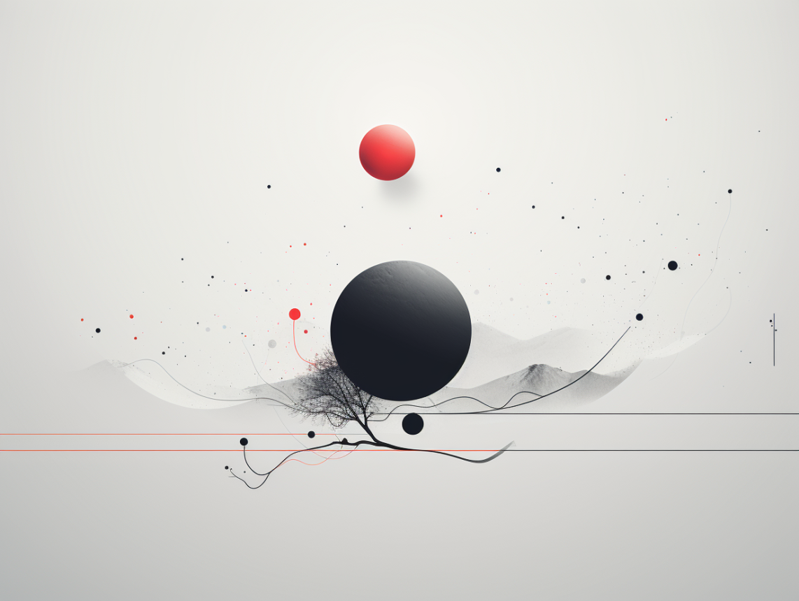

How to: make your own blog?

Now let’s get to the very reason you are here! ### You will love it if You spent countless hours on jupyter notebooks and markdown. I love it for the simplicity. Love how I can break down things into little cells of their own and keep going compartmentalizing my blog. Into folders, into cells and into my mind. All along with the incredible power of python. And the great thing about it is that you can hos tit on github pages too! free free free!
NBDEV
Here’s the post that led me to it. Huge shoutout to Jonathan Soma’s blog (please check it out it is amaaazing). This blog eventually led me to nbdev and here I am.
How to use it?
Honestly, you just need to follow their tutorial and you are good to go. It covers everything about setting up a repository to writing your notebooks. It is wordy and if you want to me write a cut-to-the-chase version then let me know in the comments!
Don’t forget to leverage the powerful formatting with quatro that is that is the backbone of this setup. Nbdev is using quatro to convert these cheeky notebooks into pretty blogposts. So create a _quatro.yml file in your nbs folder. Head over to quatro docs for the REAL documentation that helps you customize easily.
I enabled sidebar, comments, theme and other customizations thanks to quatro docs. Needless to say, I LOVE playing around with these customizations and I hope you do too!
Redirecting to your page
Go to settings of your repository, Pages section of the left panel and enter your domain name in the custom domain box. Give it a few minutes to verify and them see your changes reflected!
However, whenever I made a commit to my github repo, github build would reset my CNAME and I would have to go back and update it again. To my help came this nice github discussion. Simply create a CNAME file with the subdomain you want to redirect to. For example I use blog.ashantanu.com. I had to add this CNAME record on my domain registry (GoDaddy, NameCheap, Wix or whereever you purchased your domain name from).
Alternatives
- Github Pages with Jekyll I have gone over almost every jekyll theme in hopes of getting it right and bending it to my will. I tried the barber theme (great aesthetics) and teXt theme. Both incredible, spent infinite time working on them but maintaining them was SO tough. Constantly trying to keep up with the versions, setting up environment, failing to do so and then reinventing the week. A vicious tirade. So I decided against it.
- Wix and other website builders Great for making websites, but terribly slow for blogs. Wanted something neat that can hold experiments and markdown. So I dropped it. BUT! made my website with it and love every bit of it. Check it out here.
- Medium I love medium. I love the aesthetics, the simplicity, the community. But the paywall, hate the paywall. I wanted something that I can call my own. So I decided against it again. But I do have some older posts on medium. Check it out here.
- Fast.ai They have a pretty neat template that can set you up in minutes.It’s barebones but you can customize and go a long way. It helps you write quickly and get your content out there. I used it for a while but wanted something more customizable. Check it out here.
Conclusion
The most difficult part of writing your own blog is taking the first step. I know I sound like every other self-help Guru but belive me it is true. I know I will make mistakes on the way and that is FINE. So just pick the method you find easiest and suitable to your needs and get started! And don’t forget to tell me about it because I’d love to hear your stories!
Gotta end with midj image